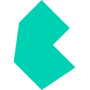

Sobre mí
Datos de contacto
 @cillesca
@cillescaHabilidades
 Javascript
Javascript React
React Vue
Vue Alpinejs
Alpinejs Node Js
Node Js Bun
Bun express
express Next.js
Next.js Elysia
Elysia PHP
PHP Laravel
Laravel Wordpress
Wordpress Css
Css Bootstrap
Bootstrap
Bulma Tailwindcss
Tailwindcss Json
Json Yaml
Yaml GraphQL
GraphQL SQLite
SQLite PostgreSQL
PostgreSQL MongoDB
MongoDB Vite
ViteCarlos Enrique Illesca Monsalve
Trabajando en :
pp-is
1.2.7
Pequeña libreria para validación.
Una pequeña herramienta para validaciones simples y cotidianas. Inspirada en la famosa librería "lodash" pero solo con las funciones mas usadas y extensible con una funcion para "done" y "reject".
isArrayisBooleanisDateisFunctionisNullisNumberisObjectisStringisUndefinedisElementisEmptyisEmailisNaNisRegExpisUrlisHTMLCollectionisNodeListisBlankisPromiseisNil

pp-events
1.3.4
Simple gestor de eventos de Javascript.
Una biblioteca ligera y eficiente para la gestión de eventos en JavaScript, diseñada para simplificar la manera en que los desarrolladores manejan la comunicación basada en eventos en sus aplicaciones web.Permite crear, gestionar y disparar eventos personalizados de manera sencilla y eficiente.
eventsjavascriptemiter
pp-validate
1.0.1
Librería JavaScript para validación de datos con reglas personalizables y sintaxis simple.
Una Librería JavaScript liviana y flexible para validación de datos. Ofrece un conjunto completo de reglas predefinidas para validar tipos numéricos, patrones, cadenas de texto y valores booleanos. Su API intuitiva permite validar objetos contra reglas personalizadas, ideal para formularios web y validación de datos en general.
validate
pp-model.js
1.2.7
Los modelos son el corazón de cualquier aplicación Javascript.
Una biblioteca JavaScript liviana y potente que proporciona una estructura robusta para el manejo de datos en aplicaciones web modernas. Con un sistema integrado de eventos y validación, permite rastrear y reaccionar a cambios en tiempo real, implementar validaciones personalizadas y manipular datos estructurados de forma eficiente. La biblioteca ofrece una API intuitiva que incluye verificación de tipos, manipulación de estados y soporte para reglas de validación avanzadas, haciéndola ideal tanto para proyectos pequeños como para aplicaciones empresariales complejas que requieren una gestión de estado confiable y estructurada.
modeldata-modeldata
pp-rut
1.0.3
Analiza de forma rapida y sencilla los R.U.T chilenos
Una herramienta simple para verificar el dígito de un R.U.T chileno , este dígito se verifica través de un calculo matemático muy sencillo llamado Modulo 11.
rutchilean rut
librut
1.0.0


Analiza de forma rapida y sencilla los R.U.T chilenos
Una Aplicación de consola sencilla para verificar el dígito del R.U.T chileno. Además incluye "librut.h" para agregar esta funcionalidad a tu proyecto personalizado.
rutcppc++chilean rut
c_print
0.5.0

Biblioteca de impresión de texto en color para C
c_print es una librería de C que proporciona un sistema intuitivo y potente para imprimir texto con colores en la terminal usando códigos ANSI. Cuenta con una sintaxis flexible basada en patrones similar a los format strings de Python, con soporte para colores de texto, colores de fondo, estilos de texto y alineación de texto.
cprintcolored
zig-pug
4.1.2

Un motor de plantillas de alto rendimiento inspirado en Pug.
Desarrollo de un compilador de plantillas Pug a HTML, construido desde cero utilizando el lenguaje de sistemas Zig. Integra el runtime mujs (ES5.1) para el procesamiento rápido y seguro de lógica dinámica y variables JSON dentro de las plantillas.
zigpugaddonclilib
lucide-mithril
1.0.1
Iconos Lucide in Mithril
En un proceso automatico obtenemos componentes mithril usando los iconos de la famosa libreria Lucide. Fue algo frustante darme cuenta que lucide solo da soporte a framework famosos como Vue y React.
svgcomponentslucidemithril